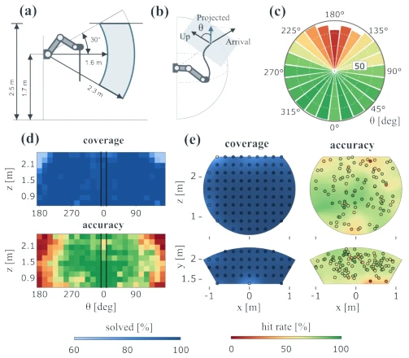
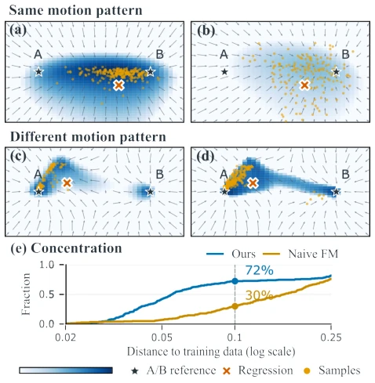

Fig. 1: One model, any rope, any point, any direction. Real-world strikes across three DLOs with different physical properties: Rope A, a green braided rope; Rope B, a black plastic chain; and Rope C, a yellow braided cord. For each rope, the robot strikes the same point from different target arrival directions (left) and different points with the same target arrival direction (right). Red dots and arrows indicate the commanded strike position and arrival direction. Each example is executed with a zero-shot strike.
Fig. 2: System overview and network architectures. Left: TRACE generates goal–action pairs in GPU co-simulation to train the base policy. RECAP calibrates the real system once and corrects the nominal action for each goal before a single open-loop strike. (a) The base and correction policies use conditional flow matching (CFM), conditioned on g and (g, ¯w, ∆, ˆη), respectively. (b) RECAP iteratively fits rope and rig parameters to measured calibration swings. These estimates condition the correction policy to adapt actions to the real system. Dashed lines indicate input.

Fig. 3: Experimental setup and simulation results. (a) Tar- gets are selected within the workspace. (b) Arrival angle θ, measured after projecting the rope-tip velocity onto the tangent plane of the arm-centered sphere. (c) Radar-plot radius indicates data-generation coverage for each θ, and color indicates policy hit rate. (d,e) Data-generation coverage and policy accuracy, measured by solved generation targets and hit evaluation targets, respectively.
Fig. 4: Workspace maps on Rope A (real world) for 3D goals with Base, Baseline and Ours, and for 4D goals with Baseline and Ours: success rate (upper two rows) and mean tip–target distance (lower two rows) of each target over its three swings. A 3D goal succeeds within 5 cm; a 4D goal, which also requires arriving within 10◦of the commanded direction at ≥1 m/s, is scored within 10 cm, as the column titles say. The distance scale saturates at 20 cm. Each quantity is shown in the front view (lateral x vs. height z from the wall-mounted base) and, directly below it on the same x axis, in the top view (lateral x vs. forward y). Dots are the evaluated targets; the shaded field is a kernel-weighted interpolation between them, and the black star marks the wall-mounted robot base.

Fig. 5: Learning multiple swings for one goal. We compare goal conditioning in every block (ours, left) with condi- tioning only at the input (naive FM, right). Stars mark two training swings wA, wB associated with goal g; dots show generated samples. Shading shows a 2D slice of the conditional log-density log p(w | g), and arrows show the learned flow field at s = 0.9. (a,b) For swings from the same motion pattern, our model produces more concentrated samples. (c,d) For swings from different patterns, our model produces more clearly separated density peaks. Regression (×) predicts a single action that can average incompatible swings. (e) For the pair in (c,d), curves show the fraction of samples within a given distance of the nearer training swing, normalized by the pair’s separation in n